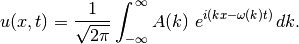
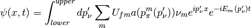

Question
How to interpret neutrino propagation and scattering using wave packet formalism?
In the book of Principles of Quantum Mechanics, Shankar shows how to deal with scattering using just wave packet.
What I can do is to check the following questions.
From uncertainty principle we know it’s not good enough to treat neutrinos as mono-momentum particles because our measurement measures the momentum with an accuracy and the position of the neutrinos are not completely determined. We have both momentum width and position width which looks a lot like a wave packet.
The caveats are
In principle we need all the information about the generation of neutrinos. However, we can use some unknown paramters to derive the formalism of the wave packets then investigate the unknown paramters.
A wave packet is constructed with a distribution of amplitude at each momentum and position and time.
Note
A wave packet in wave dynamics is bunch of plane waves that makes a localized packet. For example one of the general form of wave packets is

Basically, one needs a lot of frequencies/wavenumbers/momenta to construct some localized waves.
As an application of this general wave packet, we can write down the wave packet of neutrinos using an assumed initial distribution over all possible momenta. The problem is that we have no idea what the amplitude should be.
Some questions should be answered in this formalism.
Question
What is , i.e., the flavour state, in the formalism of wave packet?
Answer
In the view of math, the flavour state is a superposition of all mass states,

In other words, as long as we can measure the wave packet in a sense that the position difference is large enough, the wave packet still.
Question
What does decoherence mean then?
Answer
An first idea can be that the wave packets of different mass eigen states are travelling at different speed thus they get very far apart after some travelling time.
However we should be careful with the wave packet formalism. This treatment is infact an effective treatment in my understanding, to reconcile the fact that the neutrinos are actually not at a definite position and momentum state due to quantum uncertainty principle.
So any discussion about the decoherence of the wave packets should make clear of the measurements including the production procedure.
.